[101]:
import jax
import jax.numpy as jnp
import numpyro
import numpy as np
from dataclasses import dataclass, field
from typing import Dict, List
from gravpop import *
from truncnormkde import *
from matplotlib.patches import Ellipse
import numpyro.distributions as dist
prior = {
'mu_x' : dist.Uniform(0,1),
'sigma_x' : dist.Uniform(0,1),
'mu_y' : dist.Uniform(0,1),
'sigma_y': dist.Uniform(0,1),
'rho' : dist.Uniform(-1,1)
}
class JefferysPrior:
def __init__(self, hyper_var_names, eta=1):
self.hyper_var_names = hyper_var_names
self.eta = eta
def logpdf(self, x):
rho = x.get(self.hyper_var_names[4],0)
det = 1-rho**2
return (self.eta-1)*jnp.log(det)
latex_symbols = {
'mu_x' : r"$\mu_x$",
'sigma_x' : r"$\sigma_x$",
'mu_y' : r"$\mu_y$",
'sigma_y': r"$\sigma_y$",
'rho' : r"$\rho$"
}
@dataclass
class TruncatedGaussianTests:
parameters : Dict
sigma_likelihood : float = 0.5
N_events : int = 500
oversample_ratio : int = 10
a : np.array = field(default_factory=lambda : np.array([0,0]))
b : np.array = field(default_factory=lambda : np.array([1,1]))
def unpack_sigmas(self):
return self.parameters['sigma_x'], self.parameters['sigma_y'], self.parameters.get('rho', 0.0)
def unpack_mus(self):
return self.parameters['mu_x'], self.parameters['mu_y']
def generate(self, N):
self.N = N
a = self.a; b = self.b;
mu_1, mu_2 = self.unpack_mus()
sigma_1, sigma_2, rho = self.unpack_sigmas()
Sigma = np.array([[sigma_1**2, rho*sigma_1*sigma_2],[rho*sigma_1*sigma_2, sigma_2**2]])
L = np.linalg.cholesky(Sigma)
Z = np.random.randn(2,self.N_events*self.oversample_ratio)
X = (L @ Z) + jnp.array([mu_1, mu_2])[:,None]
x_in_range = (X[0,:] > a[0]) & (X[0,:] < b[0])
y_in_range = (X[1,:] > a[1]) & (X[1,:] < b[1])
X = X[:, x_in_range & y_in_range]
X = X[:, 0:self.N_events]
self.X = X
def plot_intrinsic_parameters(self, alpha=0.01):
import matplotlib.pyplot as plt
fig,ax = plt.subplots(1)
for i in range(self.X.shape[1]):
cov_matrix = np.diag([self.sigma_likelihood**2, self.sigma_likelihood**2])
eig_values, eig_vectors = np.linalg.eigh(cov_matrix)
angle = np.degrees(np.arctan2(eig_vectors[1, 0], eig_vectors[0, 0]))
width = np.sqrt(eig_values[0]) * 2 * 1.645 # 90% CI
height = np.sqrt(eig_values[1]) * 2 * 1.645 # 90% CI
ellipse = Ellipse(xy=(self.X[0, i], self.X[1, i]),
width=width,
height=height,
angle=angle,
edgecolor=None,
lw=2,
facecolor='b',
#alpha=1/(self.N_events*((7*self.sigma_likelihood)**2)))
alpha=alpha)
ax.add_patch(ellipse)
ax.scatter(self.X[0,:], self.X[1,:], color="k")
ax.set_xlabel("x")
ax.set_ylabel("y")
ax.set_xlim((self.a[0], self.b[0]))
ax.set_ylim((self.a[1], self.b[1]))
#plt.legend()
plt.title(f"{self.N_events} events")
plt.show()
def create_data(self):
event_data = {'x_mu_kernel' : self.X[0,:][None].T + np.random.randn(*(self.X[0,:][None].T).shape)*self.sigma_likelihood,
'y_mu_kernel' : self.X[1,:][None].T + np.random.randn(*(self.X[1,:][None].T).shape)*self.sigma_likelihood,
'x_sigma_kernel' : self.sigma_likelihood*np.ones((self.N_events, 1)),
'y_sigma_kernel' : self.sigma_likelihood*np.ones((self.N_events, 1)),
'weights' : np.ones((self.N_events, 1))}
self.event_data = event_data
return event_data
def infer(self, model, num_samples=1000, prior=prior, latex_symbols={}):
self.HL = HybridPopulationLikelihood(sampled_models=[], analytic_models=[model],
event_data = self.event_data, selection_data=None)
the_sampler = Sampler(priors = {k:v for k,v in prior.items() if k in self.parameters.keys()},
constraints=[JefferysPrior(['mu_x', 'sigma_x', 'mu_y', 'sigma_y', 'rho'])],
latex_symbols={k: latex_symbols.get(k, k) for k in self.parameters.keys()},
likelihood=self.HL,
num_samples=num_samples)
the_sampler.sample()
self.sampler = the_sampler
the_sampler.corner(truth=np.array([self.parameters[key] for key in the_sampler.samples.columns]));
def compare_posterior_predictive(self):
import matplotlib.pyplot as plt
data_grid = Grid([Grid1D('x', 0, 1, 100), Grid1D('y', 0, 1, 100)]).data
Z_init = self.HL.models[0].evaluate(data_grid, self.parameters)
chuncked_func = chunked_vmap(lambda x: self.HL.models[0].evaluate(data_grid, x),
in_axes=({k:0 for k in self.parameters.keys()},),
chunk=100)
Z = chuncked_func({col:self.sampler.samples[col].values for col in self.sampler.samples.columns})
fig, axes = plt.subplots(ncols=2, figsize=(10,5))
axes[0].contourf(data_grid['x'], data_grid['y'], jnp.median(Z,axis=0))
axes[0].set_title("Median Posterior Predictive")
axes[1].contourf(data_grid['x'], data_grid['y'], Z_init,axis=0)
axes[1].set_title("Injected Distribution")
plt.show()
def quantile_posterior_predictive(self, quantiles=[0.25, 0.5, 0.75]):
import matplotlib.pyplot as plt
data_grid = Grid([Grid1D('x', 0, 1, 100), Grid1D('y', 0, 1, 100)]).data
Z_init = self.HL.models[0].evaluate(data_grid, self.parameters)
chuncked_func = chunked_vmap(lambda x: self.HL.models[0].evaluate(data_grid, x),
in_axes=({k:0 for k in self.parameters.keys()},),
chunk=100)
Z = chuncked_func({col:self.sampler.samples[col].values for col in self.sampler.samples.columns})
mu_1, mu_2 = self.unpack_mus()
fig, axes = plt.subplots(ncols=len(quantiles), figsize=(10,5))
for i in range(len(quantiles)):
contour_plot = axes[i].contourf(data_grid['x'], data_grid['y'], jnp.quantile(Z, quantiles[i], axis=0))
axes[i].set_title(f"{np.round(quantiles[i]*100, 2)} Posterior Predictive")
plt.colorbar(contour_plot, ax=axes[i])
axes[i].scatter([mu_1],[mu_2], color='r', marker='x')
plt.show()
def ppd(self):
#posts = {col:self.sampler.samples[col].values for col in self.sampler.samples.columns};
df_samps = self.HL.models[0].sample(self.sampler.samples, oversample=10)
return BoundedKDEPlot(df_samps).plot(a=self.a, b=self.b)
[82]:
TGT = TruncatedGaussianTests(parameters = {'mu_x' : 0.2, 'sigma_x': 0.2, 'mu_y': 0.0, 'sigma_y':0.2},
sigma_likelihood=0.03, N_events=500)
TGT.generate(100)
TGT.create_data();
var_names = ['x', 'y']
hyper_var_names = ['mu_x', 'sigma_x', 'mu_y', 'sigma_y']
a = [0.0, 0.0]
b = [1.0, 1.0]
TG1D = TruncatedGaussian1DIndependentAnalytic(a=0, b=1, var_names=var_names, hyper_var_names=hyper_var_names)
TGT.plot_intrinsic_parameters();
TGT.infer(TG1D)
#TGT.compare_posterior_predictive()
#TGT.quantile_posterior_predictive()
TGT.ppd();
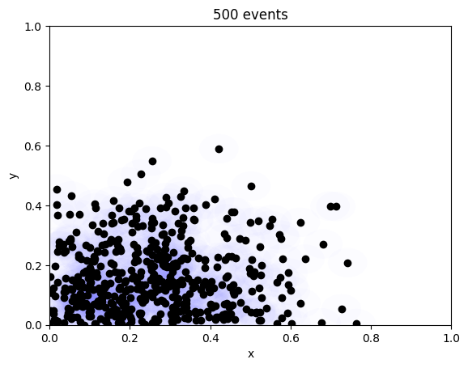
No selection function provided
sample: 100%|███████████████████████████████████████████| 2000/2000 [00:11<00:00, 168.66it/s, 7 steps of size 2.79e-01. acc. prob=0.85]
mean std median 5.0% 95.0% n_eff r_hat
mu_x 0.20 0.02 0.20 0.17 0.22 325.55 1.00
mu_y 0.03 0.02 0.03 0.00 0.06 210.82 1.00
sigma_x 0.20 0.01 0.20 0.18 0.22 311.83 1.01
sigma_y 0.19 0.01 0.19 0.17 0.20 202.40 1.00
Number of divergences: 0
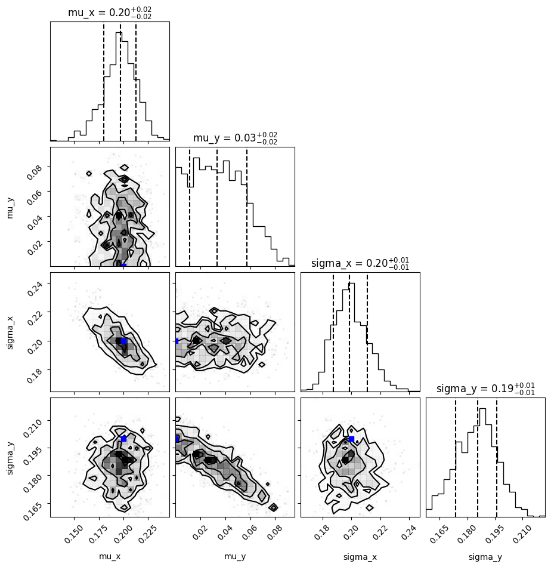
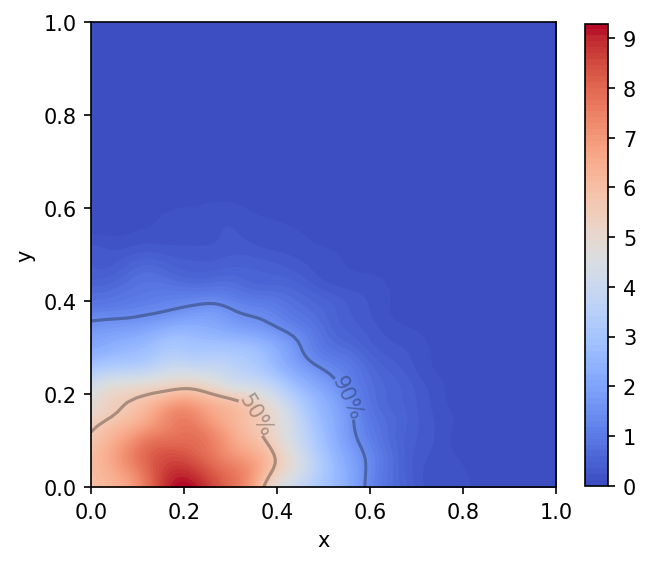
[105]:
TGT = TruncatedGaussianTests(parameters = {'mu_x' : 0.2, 'sigma_x': 0.1, 'mu_y': 0.0, 'sigma_y':0.2, 'rho': 0.0},
sigma_likelihood=0.5, N_events=1000)
TGT.generate(1000)
TGT.create_data();
var_names = ['x', 'y']
hyper_var_names = ['mu_x', 'sigma_x', 'mu_y', 'sigma_y', 'rho']
a = [0.0, 0.0]
b = [1.0, 1.0]
TG2D = TruncatedGaussian2DAnalytic(a=a, b=b, var_names=var_names, hyper_var_names=hyper_var_names)
TGT.plot_intrinsic_parameters(alpha=0.00199);
TGT.infer(TG2D)
#TGT.compare_posterior_predictive()
#TGT.quantile_posterior_predictive()
TGT.ppd();
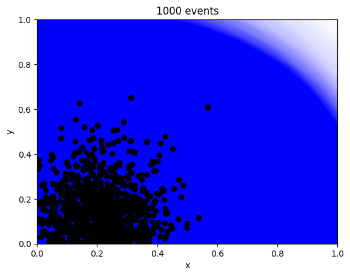
No selection function provided
sample: 100%|███████████████████████████████████████████| 2000/2000 [02:42<00:00, 12.30it/s, 35 steps of size 8.10e-02. acc. prob=0.93]
mean std median 5.0% 95.0% n_eff r_hat
mu_x 0.17 0.08 0.20 0.02 0.27 227.40 1.00
mu_y 0.11 0.06 0.11 0.01 0.19 337.78 1.00
rho -0.37 0.55 -0.50 -1.00 0.42 306.61 1.00
sigma_x 0.25 0.20 0.22 0.00 0.52 137.89 1.00
sigma_y 0.21 0.14 0.18 0.01 0.39 136.77 1.00
Number of divergences: 1
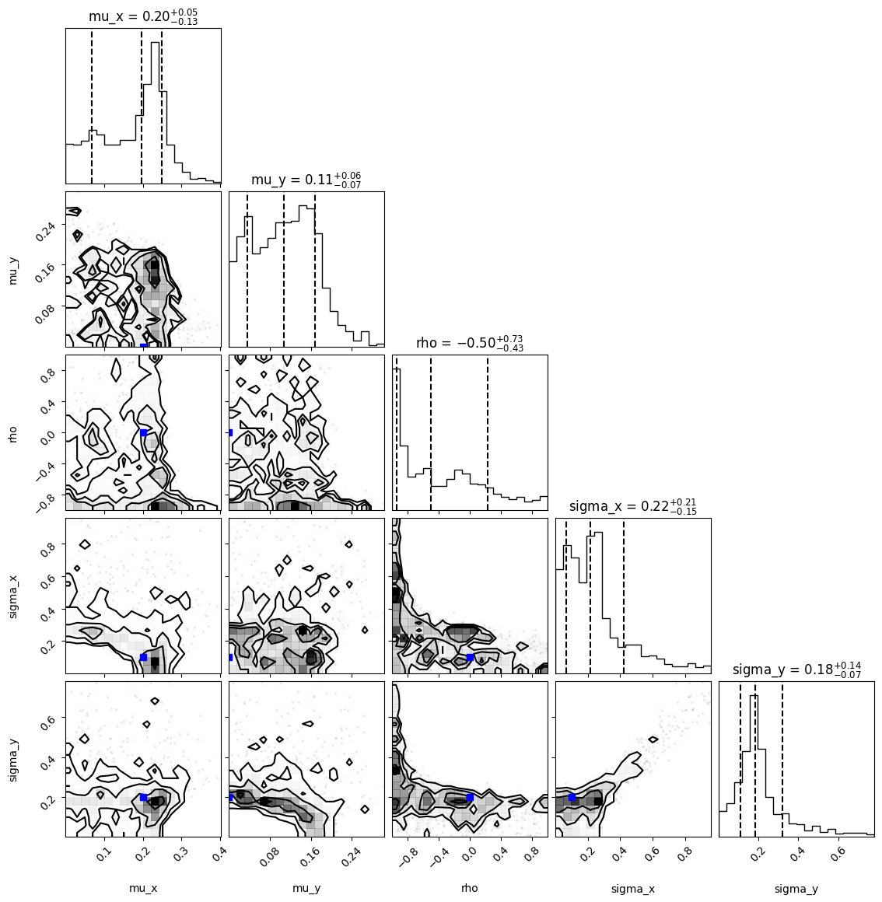
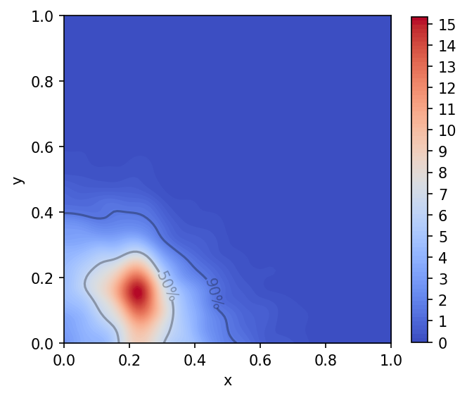
[96]:
juliacall.Main.get_correlation(0.2, 0.1, 0.0, 0.2, 0.0)
[96]:
-0.1824301590639567
[103]:
import juliacall
testfunc = juliacall.Main.seval("""
using Distributions
using TruncatedGaussianMixtures
using DataFrames
using ProgressMeter
make_trunc_norm(μ1, σ1, μ2, σ2, ρ; a=[0.0, 0.0], b=[1.0, 1.0]) = TruncatedMvNormal(MvNormal([μ1, μ2], [σ1^2 σ1*σ2*ρ; σ1*σ2*ρ σ2^2]), a, b);
function get_correlation(μ1, σ1, μ2, σ2, ρ; a=[0.0, 0.0], b=[1.0, 1.0])
M1, M2 = TruncatedGaussianMixtures.moments(make_trunc_norm(μ1, σ1, μ2, σ2, ρ; a=a, b=b));
Σ = M2 - M1 * M1';
Σ[1,2]/sqrt(Σ[1,1]*Σ[2,2])
end
function get_true_correlations(df; cols=[:mu_chi_1_at_0, :sigma_chi_1_at_0, :mu_chi_2_at_0, :sigma_chi_2_at_0, :rho_chi_1], a=[0.0, 0.0], b=[1.0, 1.0])
df_prior = DataFrame();
N = nrow(df);
for col in cols
if occursin("rho", string(col))
df_prior[!, col] = 2 .* rand(N) .- 1
else
df_prior[!, col] = rand(N);
end
end
corrs = zeros(N)
corrs_prior = zeros(N)
@showprogress for (i,x) in enumerate(eachrow(df))
corrs[i] = get_correlation([df[i, col] for col in cols]...; a=a, b=b)
corrs_prior[i] = get_correlation([df[i, col] for col in cols]...; a=a,b=b)
end
df[!, :correlation_true] = corrs;
df_prior[! ,:correlation_true] = corrs_prior;
df, df_prior
end
x -> get_true_correlations(DataFrame(x); cols=[:mu_x, :sigma_x, :mu_y, :sigma_y, :rho], a=[0.0, 0.0], b=[1.0, 1.0])
""")
df, df_prior = testfunc(pd.DataFrame({col : np.array(TGT.sampler.samples[col].values, dtype='float') for col in TGT.sampler.samples}));
import seaborn as sns
sns.pairplot(pd.DataFrame({col : np.array(getattr(df, col)) for col in juliacall.Main.names(df)}))
plt.show()
Progress: 100%|███████████████████████��█████████████████| Time: 0:00:00
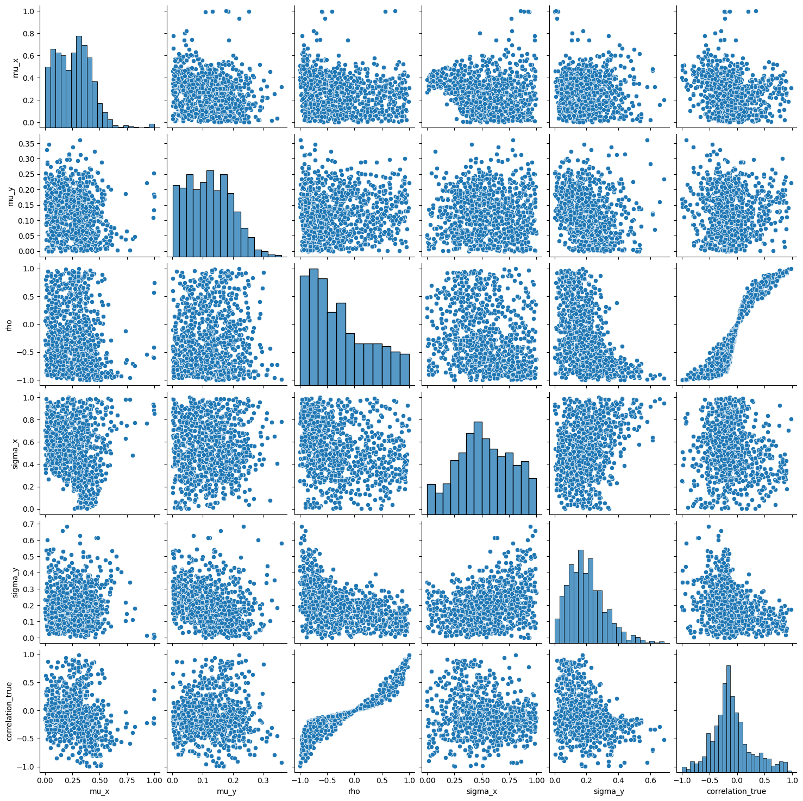
[ ]:
[168]:
TGT = TruncatedGaussianTests(parameters = {'mu_x' : 0.1, 'sigma_x': 0.2, 'mu_y': 0.2, 'sigma_y':0.1, 'rho': 0.0},
sigma_likelihood=0.5)
TGT.generate(100)
TGT.create_data();
var_names = ['x', 'y']
hyper_var_names = ['mu_x', 'sigma_x', 'mu_y', 'sigma_y', 'rho']
a = [0.0, 0.0]
b = [1.0, 1.0]
TG2D = TruncatedGaussian2DAnalytic(a=a, b=b, var_names=var_names, hyper_var_names=hyper_var_names)
TGT.plot_intrinsic_parameters(alpha=0.00199);
TGT.infer(TG2D)
TGT.compare_posterior_predictive()
TGT.quantile_posterior_predictive()
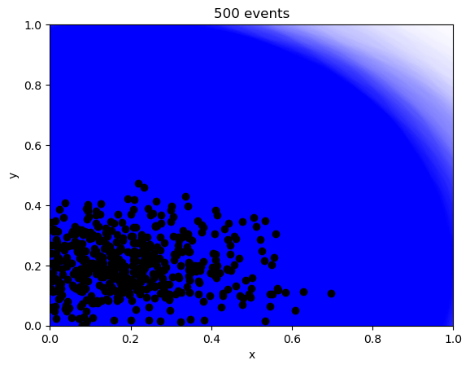
No selection function provided
sample: 100%|██████████████████████████████████████████████████████████████████████████████████████████████████████████████████████████| 2000/2000 [01:00<00:00, 33.09it/s, 23 steps of size 1.23e-01. acc. prob=0.87]
WARNING:root:Too few points to create valid contours
mean std median 5.0% 95.0% n_eff r_hat
mu_x 0.12 0.08 0.11 0.00 0.22 345.79 1.00
mu_y 0.12 0.06 0.13 0.01 0.21 287.35 1.00
rho -0.21 0.63 -0.25 -1.00 0.73 221.45 1.00
sigma_x 0.39 0.48 0.24 0.00 0.78 163.81 1.00
sigma_y 0.29 0.41 0.16 0.00 0.66 165.77 1.00
Number of divergences: 1
/var/folders/4g/bjm_kb714yl_6tgcqd4jbmqh0000gn/T/ipykernel_83683/2226853849.py:137: UserWarning: The following kwargs were not used by contour: 'axis'
axes[1].contourf(data_grid['x'], data_grid['y'], Z_init,axis=0)
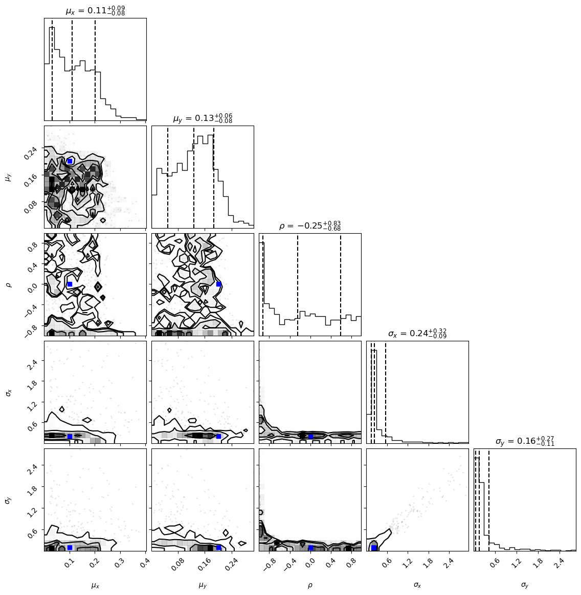
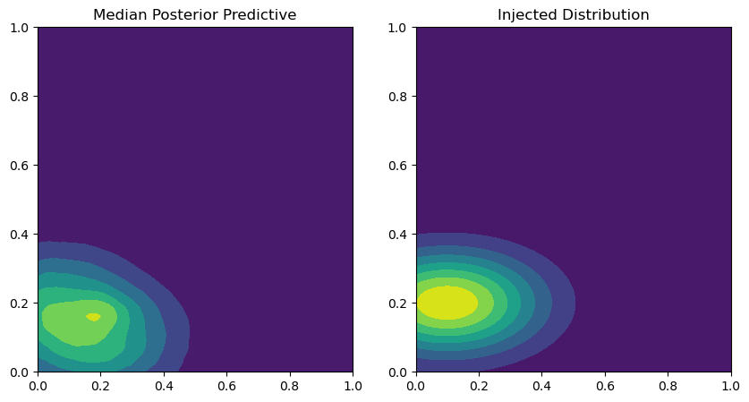
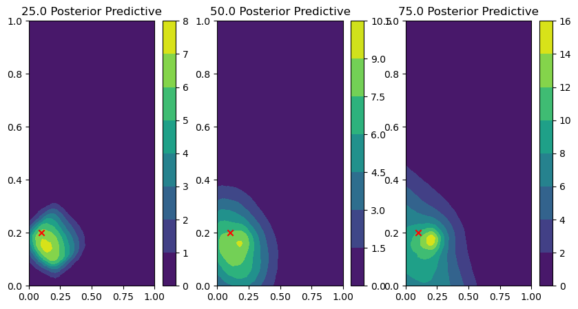
[158]:
TGT = TruncatedGaussianTests(parameters = {'mu_x' : 0.5, 'sigma_x': 0.05, 'mu_y': 0.5, 'sigma_y':0.05, 'rho': 0.8},
sigma_likelihood=0.001)
TGT.generate(100)
TGT.create_data();
var_names = ['x', 'y']
hyper_var_names = ['mu_x', 'sigma_x', 'mu_y', 'sigma_y', 'rho']
a = [0.0, 0.0]
b = [1.0, 1.0]
TG2D = TruncatedGaussian2DAnalytic(a=a, b=b, var_names=var_names, hyper_var_names=hyper_var_names)
TGT.plot_intrinsic_parameters();
TGT.infer(TG2D)
TGT.compare_posterior_predictive()
TGT.quantile_posterior_predictive()
No artists with labels found to put in legend. Note that artists whose label start with an underscore are ignored when legend() is called with no argument.
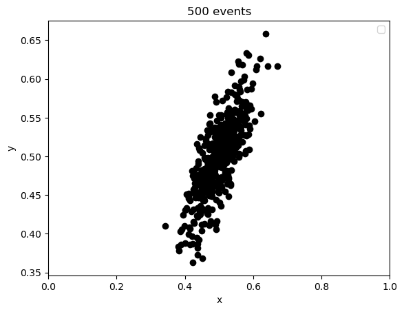
No selection function provided
sample: 100%|███████████████████████████████████████████████████████████████████████████████████████████████████████████████████████████| 2000/2000 [00:26<00:00, 75.52it/s, 7 steps of size 4.58e-01. acc. prob=0.89]
mean std median 5.0% 95.0% n_eff r_hat
mu_x 0.50 0.00 0.50 0.50 0.50 642.66 1.00
mu_y 0.50 0.00 0.50 0.49 0.50 692.94 1.00
rho 0.78 0.02 0.78 0.75 0.81 575.92 1.00
sigma_x 0.05 0.00 0.05 0.05 0.05 549.19 1.00
sigma_y 0.05 0.00 0.05 0.05 0.05 519.77 1.00
Number of divergences: 0
/var/folders/4g/bjm_kb714yl_6tgcqd4jbmqh0000gn/T/ipykernel_83683/1673770611.py:137: UserWarning: The following kwargs were not used by contour: 'axis'
axes[1].contourf(data_grid['x'], data_grid['y'], Z_init,axis=0)
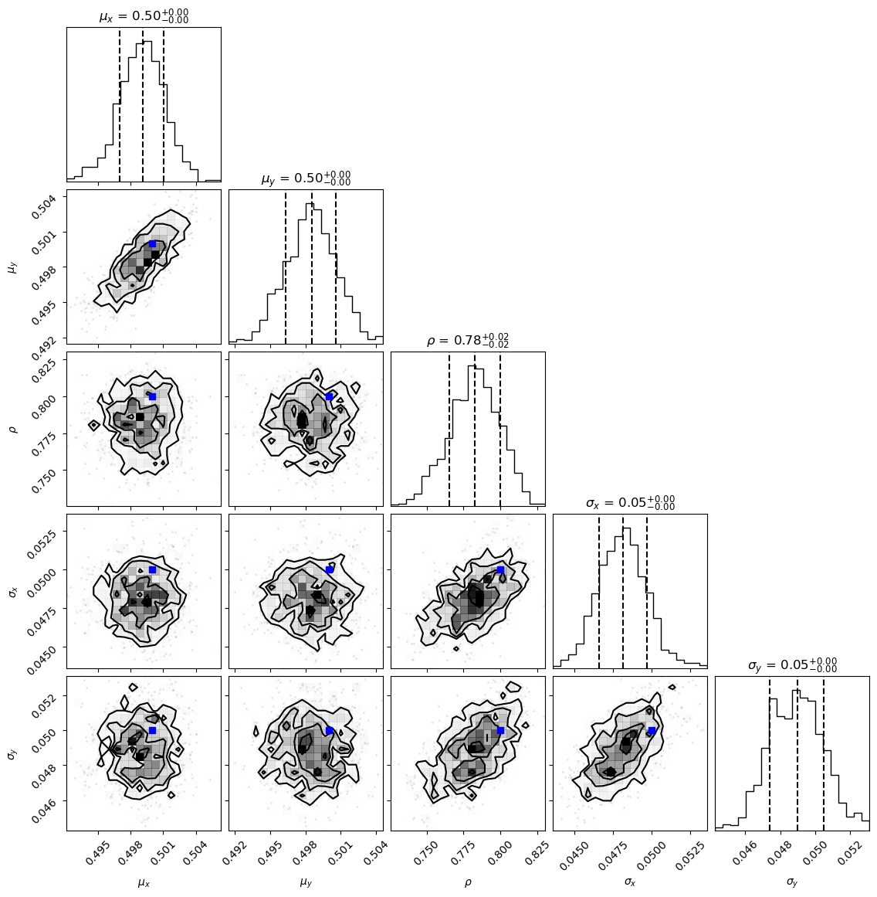
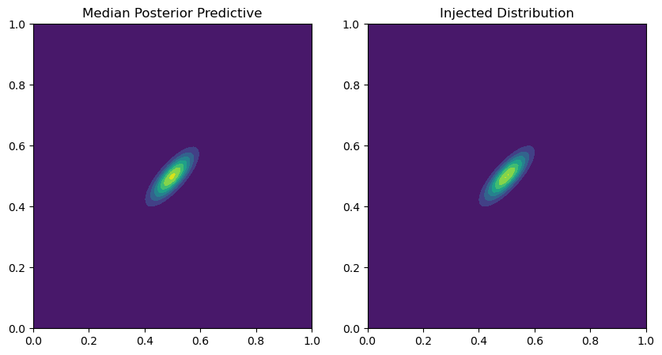
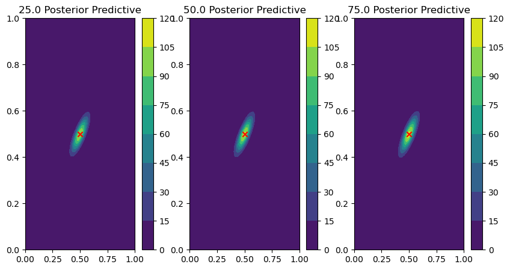
[169]:
TGT = TruncatedGaussianTests(parameters = {'mu_x' : 0.5, 'sigma_x': 0.05, 'mu_y': 0.5, 'sigma_y':0.5, 'rho': 0.1},
sigma_likelihood=0.1)
TGT.generate(500)
TGT.create_data();
var_names = ['x', 'y']
hyper_var_names = ['mu_x', 'sigma_x', 'mu_y', 'sigma_y', 'rho']
a = [0.0, 0.0]
b = [1.0, 1.0]
TG2D = TruncatedGaussian2DAnalytic(a=a, b=b, var_names=var_names, hyper_var_names=hyper_var_names)
TGT.plot_intrinsic_parameters()
TGT.infer(TG2D)
TGT.compare_posterior_predictive()
TGT.quantile_posterior_predictive()
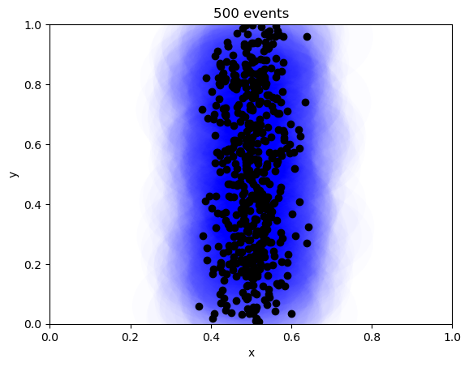
No selection function provided
sample: 100%|██████████████████████████████████████████████████████████████████████████████████████████████████████████████████████████| 2000/2000 [00:51<00:00, 38.69it/s, 63 steps of size 1.11e-01. acc. prob=0.91]
mean std median 5.0% 95.0% n_eff r_hat
mu_x 0.50 0.00 0.50 0.50 0.51 267.35 1.00
mu_y 0.53 0.11 0.52 0.39 0.63 193.24 1.00
rho 0.04 0.36 0.03 -0.62 0.59 492.75 1.00
sigma_x 0.03 0.01 0.03 0.00 0.05 222.08 1.00
sigma_y 0.64 0.50 0.46 0.30 1.23 107.22 1.01
Number of divergences: 0
/var/folders/4g/bjm_kb714yl_6tgcqd4jbmqh0000gn/T/ipykernel_83683/2226853849.py:137: UserWarning: The following kwargs were not used by contour: 'axis'
axes[1].contourf(data_grid['x'], data_grid['y'], Z_init,axis=0)
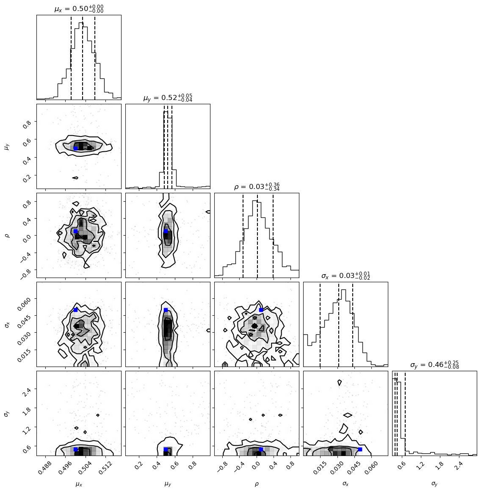
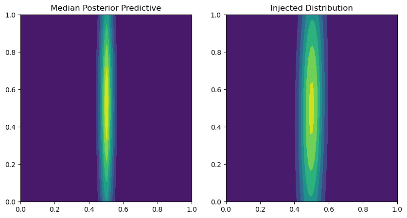
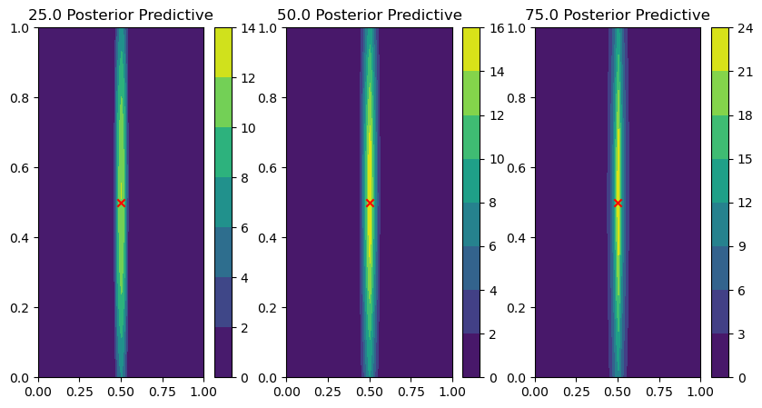
[170]:
TGT = TruncatedGaussianTests(parameters = {'mu_x' : 0.1, 'sigma_x': 0.2, 'mu_y': 0.2, 'sigma_y':0.1, 'rho': 0.0},
sigma_likelihood=0.5)
prior_small_sigma = {
'mu_x' : dist.Uniform(0,1),
'sigma_x' : dist.Uniform(0,0.3),
'mu_y' : dist.Uniform(0,1),
'sigma_y': dist.Uniform(0,0.3),
'rho' : dist.Uniform(-1,1)
}
TGT.generate(100)
TGT.create_data();
var_names = ['x', 'y']
hyper_var_names = ['mu_x', 'sigma_x', 'mu_y', 'sigma_y', 'rho']
a = [0.0, 0.0]
b = [1.0, 1.0]
TG2D = TruncatedGaussian2DAnalytic(a=a, b=b, var_names=var_names, hyper_var_names=hyper_var_names)
TGT.plot_intrinsic_parameters(alpha=0.00199);
TGT.infer(TG2D, prior=prior_small_sigma)
TGT.compare_posterior_predictive()
TGT.quantile_posterior_predictive()
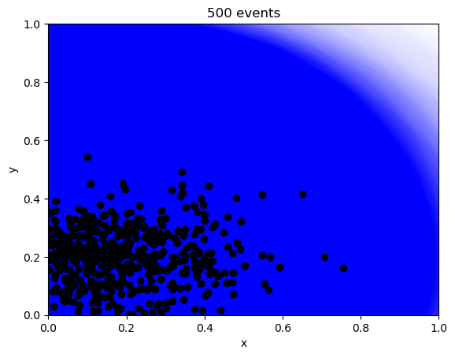
No selection function provided
sample: 100%|██████████████████████████████████████████████████████████████████████████████████████████████████████████████████████████| 2000/2000 [00:49<00:00, 40.04it/s, 31 steps of size 1.65e-01. acc. prob=0.87]
mean std median 5.0% 95.0% n_eff r_hat
mu_x 0.12 0.07 0.12 0.01 0.22 436.63 1.00
mu_y 0.13 0.07 0.14 0.01 0.22 394.85 1.00
rho -0.16 0.51 -0.20 -0.99 0.59 386.29 1.00
sigma_x 0.19 0.07 0.20 0.08 0.30 416.64 1.01
sigma_y 0.15 0.08 0.16 0.01 0.25 252.36 1.00
Number of divergences: 0
/var/folders/4g/bjm_kb714yl_6tgcqd4jbmqh0000gn/T/ipykernel_83683/2226853849.py:137: UserWarning: The following kwargs were not used by contour: 'axis'
axes[1].contourf(data_grid['x'], data_grid['y'], Z_init,axis=0)
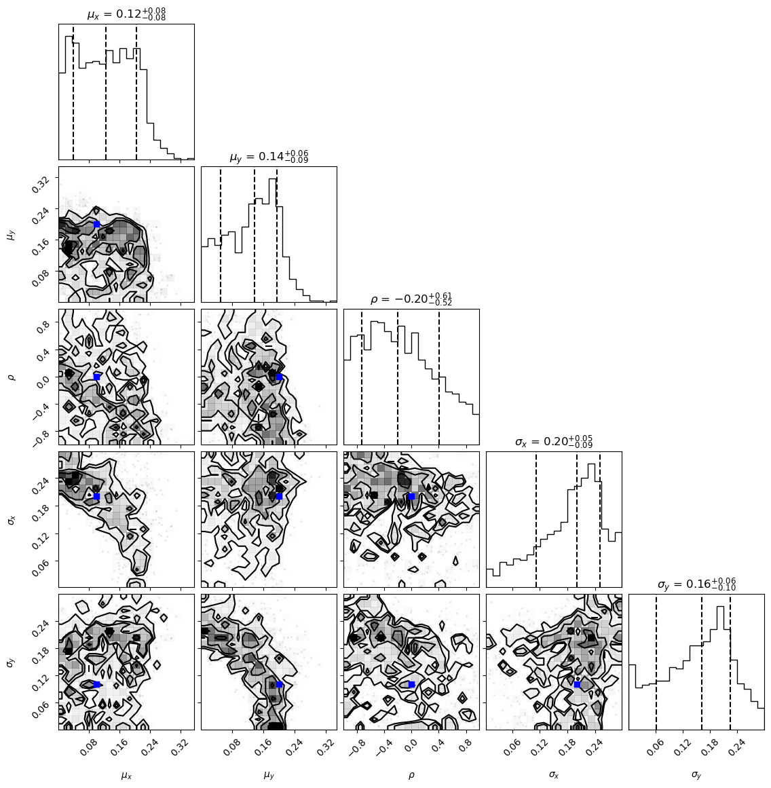
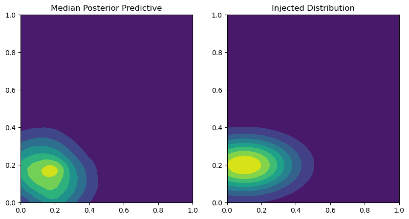
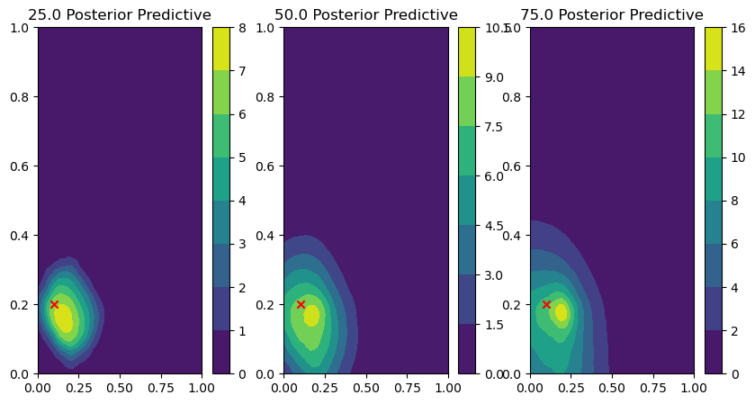
[171]:
TGT = TruncatedGaussianTests(parameters = {'mu_x' : 0.1, 'sigma_x': 0.2, 'mu_y': 0.2, 'sigma_y':0.1, 'rho': 0.8},
sigma_likelihood=0.3)
prior_small_sigma = {
'mu_x' : dist.Uniform(0,1),
'sigma_x' : dist.Uniform(0,0.8),
'mu_y' : dist.Uniform(0,1),
'sigma_y': dist.Uniform(0,0.8),
'rho' : dist.Uniform(-1,1)
}
TGT.generate(100)
TGT.create_data();
var_names = ['x', 'y']
hyper_var_names = ['mu_x', 'sigma_x', 'mu_y', 'sigma_y', 'rho']
a = [0.0, 0.0]
b = [1.0, 1.0]
TG2D = TruncatedGaussian2DAnalytic(a=a, b=b, var_names=var_names, hyper_var_names=hyper_var_names)
TGT.plot_intrinsic_parameters(alpha=0.00199);
TGT.infer(TG2D, prior=prior_small_sigma)
TGT.compare_posterior_predictive()
TGT.quantile_posterior_predictive()
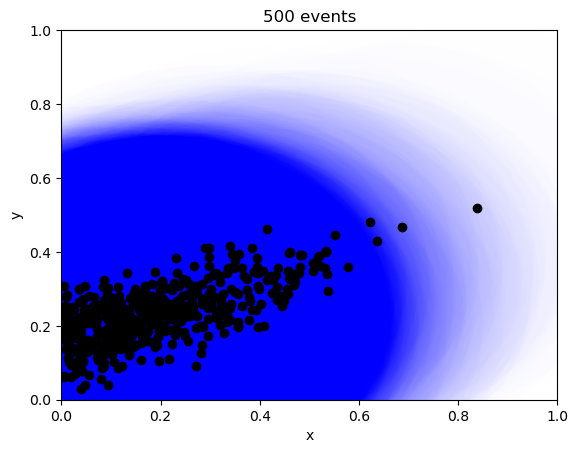
No selection function provided
sample: 100%|██████████████████████████████████████████████████████████████████████████████████████████████████████████████████████████| 2000/2000 [00:47<00:00, 41.78it/s, 15 steps of size 2.15e-01. acc. prob=0.90]
mean std median 5.0% 95.0% n_eff r_hat
mu_x 0.15 0.06 0.17 0.06 0.23 231.20 1.00
mu_y 0.24 0.03 0.24 0.20 0.28 190.07 1.02
rho 0.11 0.47 0.13 -0.58 0.94 554.98 1.00
sigma_x 0.14 0.06 0.13 0.04 0.23 374.50 1.00
sigma_y 0.09 0.05 0.08 0.00 0.15 265.01 1.01
Number of divergences: 0
/var/folders/4g/bjm_kb714yl_6tgcqd4jbmqh0000gn/T/ipykernel_83683/2226853849.py:137: UserWarning: The following kwargs were not used by contour: 'axis'
axes[1].contourf(data_grid['x'], data_grid['y'], Z_init,axis=0)
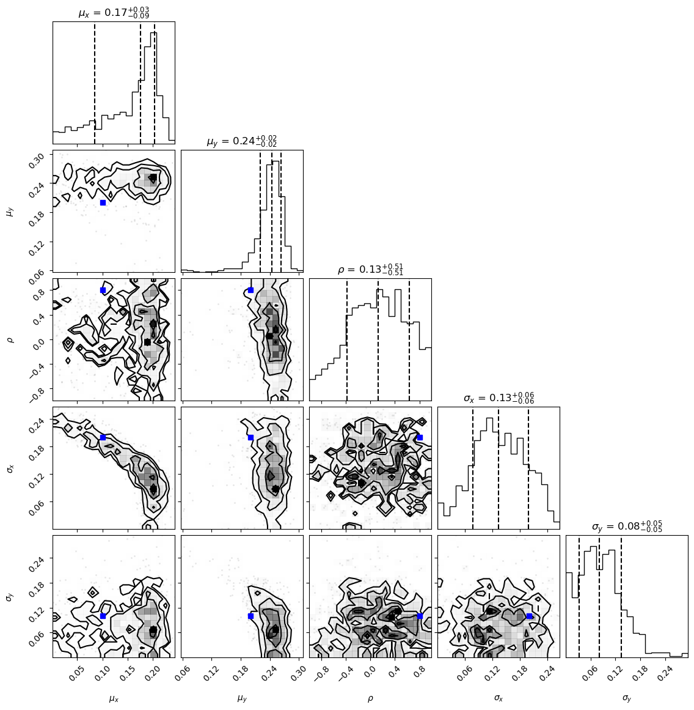
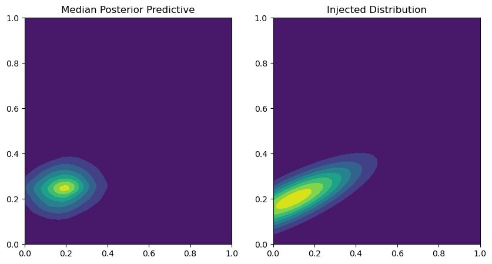
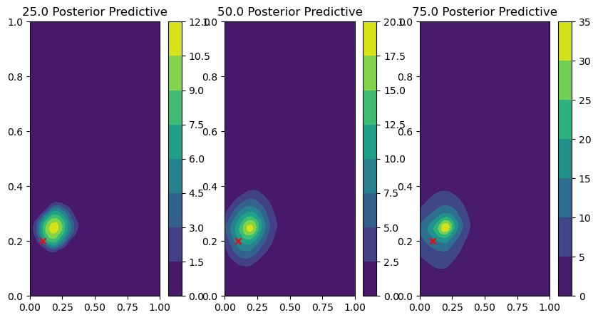
[172]:
TGT = TruncatedGaussianTests(parameters = {'mu_x' : 0.8, 'sigma_x': 0.2, 'mu_y': 0.8, 'sigma_y':0.1, 'rho': -0.8},
sigma_likelihood=0.1)
prior_small_sigma = {
'mu_x' : dist.Uniform(0,1),
'sigma_x' : dist.Uniform(0,0.8),
'mu_y' : dist.Uniform(0,1),
'sigma_y': dist.Uniform(0,0.8),
'rho' : dist.Uniform(-1,1)
}
TGT.generate(100)
TGT.create_data();
var_names = ['x', 'y']
hyper_var_names = ['mu_x', 'sigma_x', 'mu_y', 'sigma_y', 'rho']
a = [0.0, 0.0]
b = [1.0, 1.0]
TG2D = TruncatedGaussian2DAnalytic(a=a, b=b, var_names=var_names, hyper_var_names=hyper_var_names)
TGT.plot_intrinsic_parameters(alpha=0.00199);
TGT.infer(TG2D, prior=prior_small_sigma)
TGT.compare_posterior_predictive()
TGT.quantile_posterior_predictive()
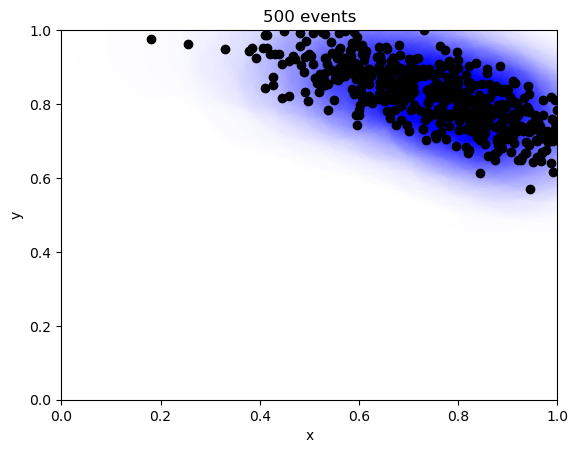
No selection function provided
sample: 100%|██████████████████████████████████████████████████████████████████████████████████████████████████████████████████████████| 2000/2000 [00:49<00:00, 40.55it/s, 15 steps of size 6.03e-02. acc. prob=0.89]
mean std median 5.0% 95.0% n_eff r_hat
mu_x 0.79 0.04 0.79 0.74 0.85 34.44 1.04
mu_y 0.80 0.02 0.80 0.77 0.83 39.34 1.04
rho -0.86 0.05 -0.87 -0.95 -0.78 100.93 1.00
sigma_x 0.23 0.05 0.22 0.18 0.28 41.59 1.03
sigma_y 0.12 0.03 0.12 0.09 0.15 68.77 1.02
Number of divergences: 0
/var/folders/4g/bjm_kb714yl_6tgcqd4jbmqh0000gn/T/ipykernel_83683/2226853849.py:137: UserWarning: The following kwargs were not used by contour: 'axis'
axes[1].contourf(data_grid['x'], data_grid['y'], Z_init,axis=0)
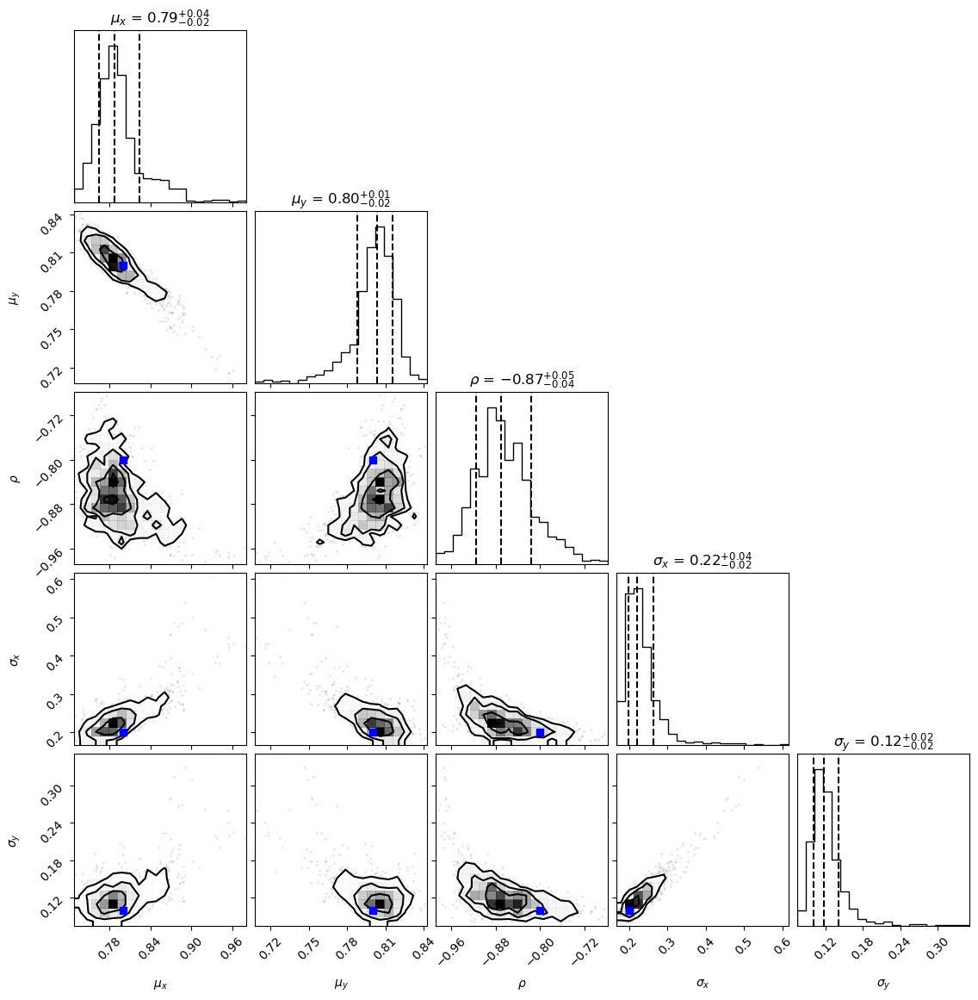
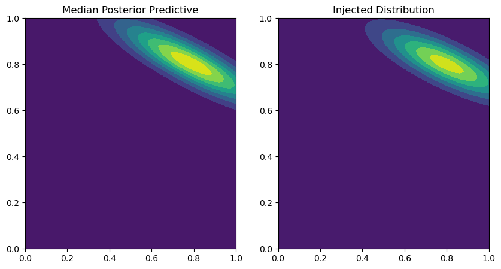
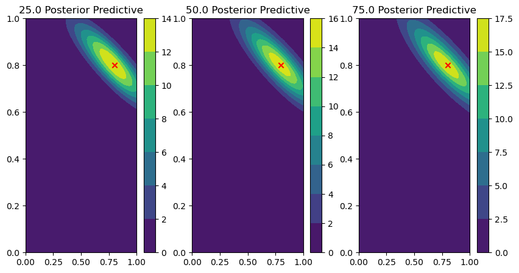
[173]:
TGT = TruncatedGaussianTests(parameters = {'mu_x' : 0.8, 'sigma_x': 0.2, 'mu_y': 0.8, 'sigma_y':0.1, 'rho': -0.8},
sigma_likelihood=0.3)
prior_small_sigma = {
'mu_x' : dist.Uniform(0,1),
'sigma_x' : dist.Uniform(0,0.8),
'mu_y' : dist.Uniform(0,1),
'sigma_y': dist.Uniform(0,0.8),
'rho' : dist.Uniform(-1,1)
}
TGT.generate(100)
TGT.create_data();
var_names = ['x', 'y']
hyper_var_names = ['mu_x', 'sigma_x', 'mu_y', 'sigma_y', 'rho']
a = [0.0, 0.0]
b = [1.0, 1.0]
TG2D = TruncatedGaussian2DAnalytic(a=a, b=b, var_names=var_names, hyper_var_names=hyper_var_names)
TGT.plot_intrinsic_parameters(alpha=0.00199);
TGT.infer(TG2D, prior=prior_small_sigma)
TGT.compare_posterior_predictive()
TGT.quantile_posterior_predictive()
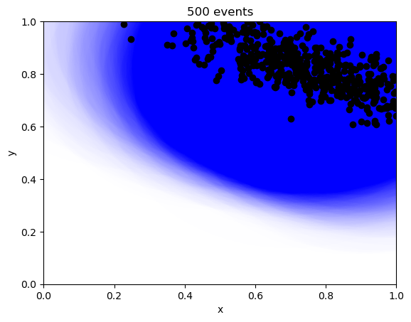
No selection function provided
sample: 100%|██████████████████████████████████████████████████████████████████████████████████████████████████████████████████████████| 2000/2000 [01:16<00:00, 25.99it/s, 23 steps of size 8.67e-02. acc. prob=0.93]
mean std median 5.0% 95.0% n_eff r_hat
mu_x 0.78 0.11 0.77 0.61 0.96 329.34 1.00
mu_y 0.84 0.08 0.83 0.73 0.99 335.49 1.00
rho -0.91 0.14 -0.96 -1.00 -0.78 292.03 1.00
sigma_x 0.43 0.18 0.40 0.17 0.72 213.25 1.00
sigma_y 0.32 0.14 0.30 0.10 0.56 216.26 1.00
Number of divergences: 0
/var/folders/4g/bjm_kb714yl_6tgcqd4jbmqh0000gn/T/ipykernel_83683/2226853849.py:137: UserWarning: The following kwargs were not used by contour: 'axis'
axes[1].contourf(data_grid['x'], data_grid['y'], Z_init,axis=0)
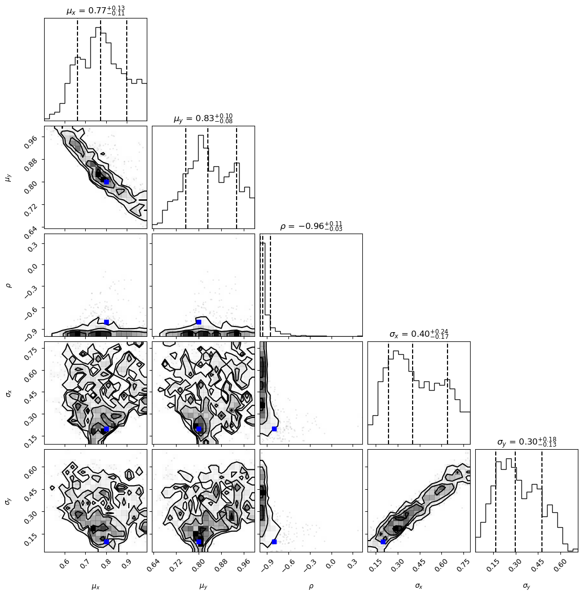
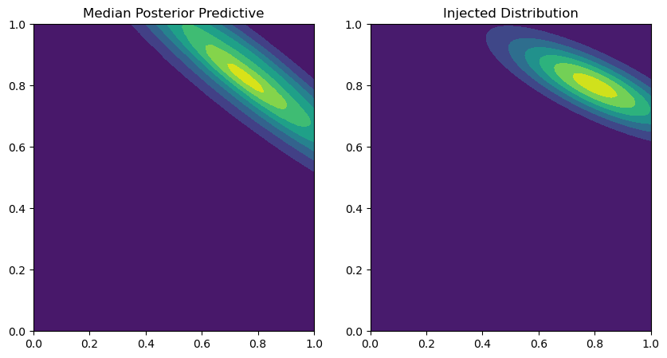
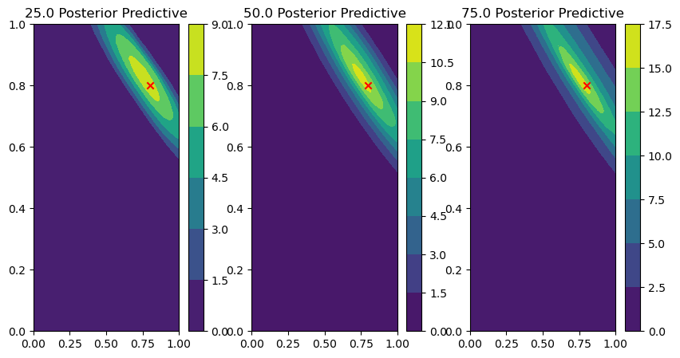
[174]:
TGT = TruncatedGaussianTests(parameters = {'mu_x' : 0.1, 'sigma_x': 0.2, 'mu_y': 0.2, 'sigma_y':0.1, 'rho': -0.8},
sigma_likelihood=0.3)
prior_small_sigma = {
'mu_x' : dist.Uniform(0,1),
'sigma_x' : dist.Uniform(0,0.8),
'mu_y' : dist.Uniform(0,1),
'sigma_y': dist.Uniform(0,0.8),
'rho' : dist.Uniform(-1,1)
}
TGT.generate(100)
TGT.create_data();
var_names = ['x', 'y']
hyper_var_names = ['mu_x', 'sigma_x', 'mu_y', 'sigma_y', 'rho']
a = [0.0, 0.0]
b = [1.0, 1.0]
TG2D = TruncatedGaussian2DAnalytic(a=a, b=b, var_names=var_names, hyper_var_names=hyper_var_names)
TGT.plot_intrinsic_parameters(alpha=0.00199);
TGT.infer(TG2D, prior=prior_small_sigma)
TGT.compare_posterior_predictive()
TGT.quantile_posterior_predictive()
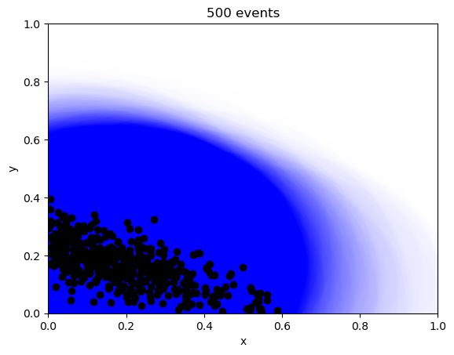
No selection function provided
sample: 100%|██████████████████████████████████████████████████████████████████████████████████████████████████████████████████████████| 2000/2000 [01:01<00:00, 32.38it/s, 15 steps of size 1.25e-01. acc. prob=0.90]
mean std median 5.0% 95.0% n_eff r_hat
mu_x 0.17 0.07 0.18 0.03 0.28 278.52 1.00
mu_y 0.12 0.07 0.12 0.01 0.20 391.30 1.00
rho -0.67 0.36 -0.82 -1.00 -0.10 210.20 1.00
sigma_x 0.27 0.18 0.22 0.05 0.59 122.54 1.01
sigma_y 0.25 0.14 0.20 0.08 0.52 126.51 1.01
Number of divergences: 0
/var/folders/4g/bjm_kb714yl_6tgcqd4jbmqh0000gn/T/ipykernel_83683/2226853849.py:137: UserWarning: The following kwargs were not used by contour: 'axis'
axes[1].contourf(data_grid['x'], data_grid['y'], Z_init,axis=0)
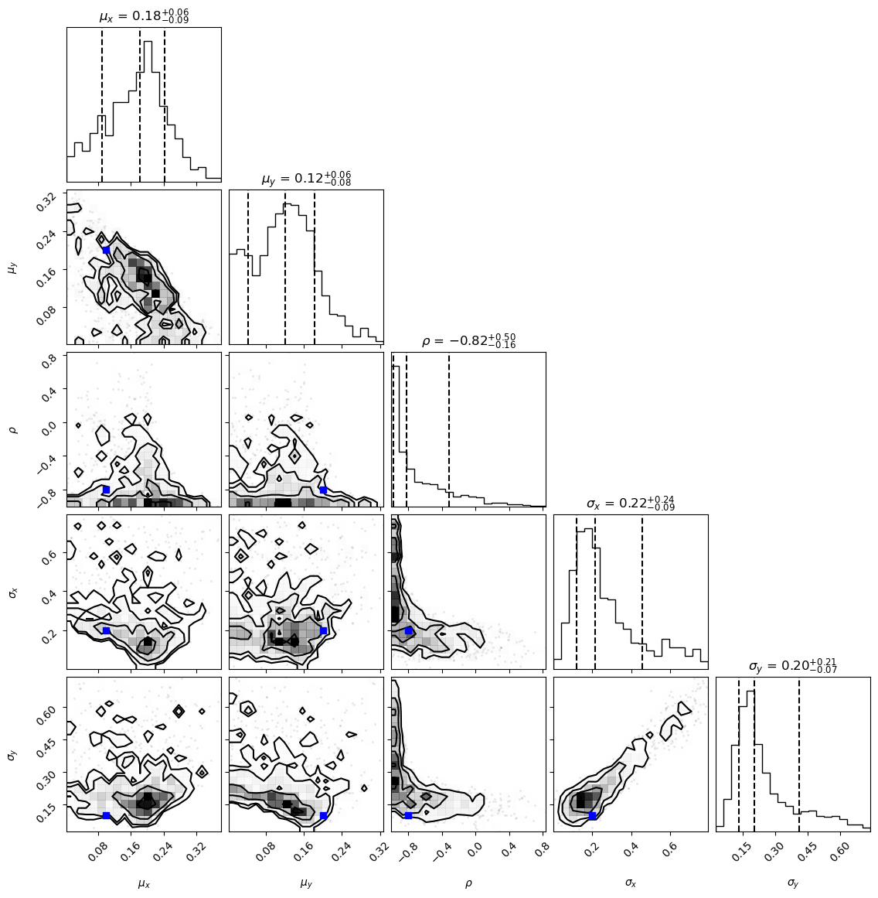
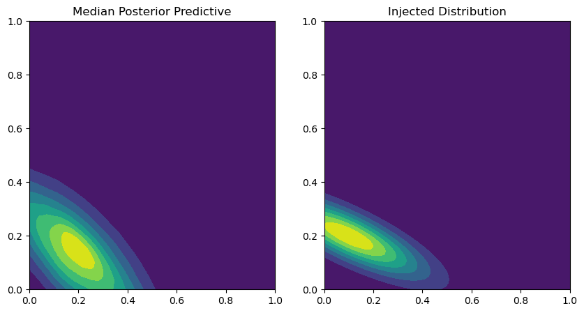
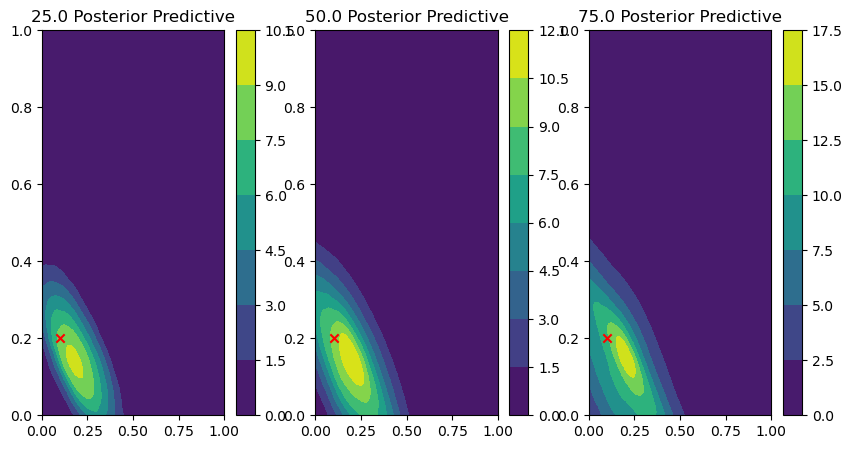
[175]:
TGT = TruncatedGaussianTests(parameters = {'mu_x' : 0.1, 'sigma_x': 0.2, 'mu_y': 0.2, 'sigma_y':0.1, 'rho': -0.8},
sigma_likelihood=0.5)
prior_small_sigma = {
'mu_x' : dist.Uniform(0,1),
'sigma_x' : dist.Uniform(0,0.8),
'mu_y' : dist.Uniform(0,1),
'sigma_y': dist.Uniform(0,0.8),
'rho' : dist.Uniform(-1,1)
}
TGT.generate(100)
TGT.create_data();
var_names = ['x', 'y']
hyper_var_names = ['mu_x', 'sigma_x', 'mu_y', 'sigma_y', 'rho']
a = [0.0, 0.0]
b = [1.0, 1.0]
TG2D = TruncatedGaussian2DAnalytic(a=a, b=b, var_names=var_names, hyper_var_names=hyper_var_names)
TGT.plot_intrinsic_parameters(alpha=0.00199);
TGT.infer(TG2D, prior=prior_small_sigma)
TGT.compare_posterior_predictive()
TGT.quantile_posterior_predictive()
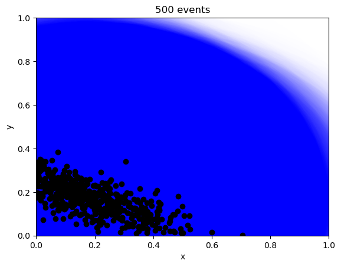
No selection function provided
sample: 100%|██████████████████████████████████████████████████████████████████████████████████████████████████████████████████████████| 2000/2000 [00:54<00:00, 36.60it/s, 15 steps of size 1.49e-01. acc. prob=0.89]
mean std median 5.0% 95.0% n_eff r_hat
mu_x 0.15 0.07 0.16 0.03 0.24 488.43 1.00
mu_y 0.16 0.06 0.18 0.04 0.24 322.71 1.01
rho -0.04 0.58 -0.03 -1.00 0.76 437.08 1.00
sigma_x 0.17 0.12 0.16 0.00 0.27 284.51 1.01
sigma_y 0.13 0.12 0.10 0.00 0.25 256.85 1.00
Number of divergences: 0
/var/folders/4g/bjm_kb714yl_6tgcqd4jbmqh0000gn/T/ipykernel_83683/2226853849.py:137: UserWarning: The following kwargs were not used by contour: 'axis'
axes[1].contourf(data_grid['x'], data_grid['y'], Z_init,axis=0)
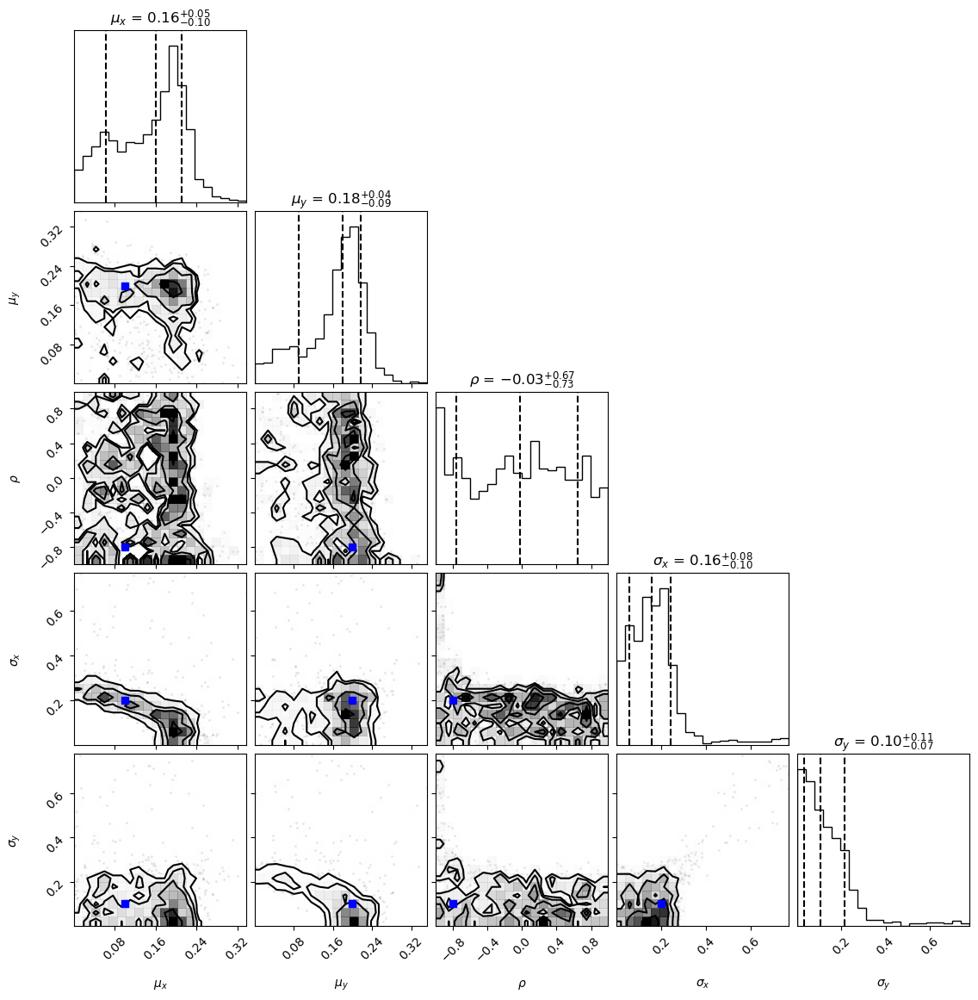
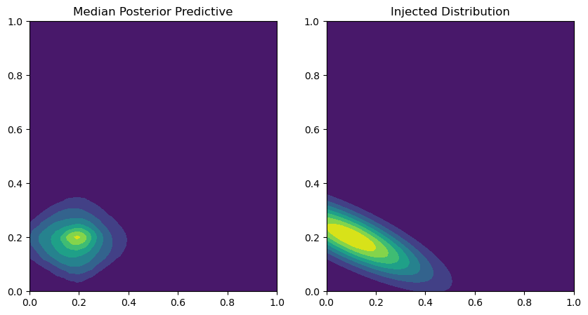
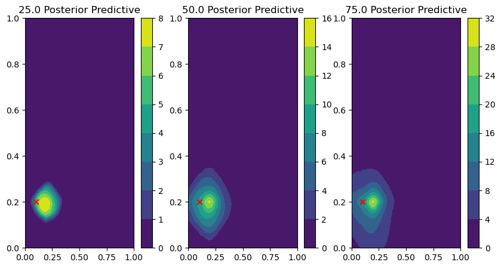
[ ]: